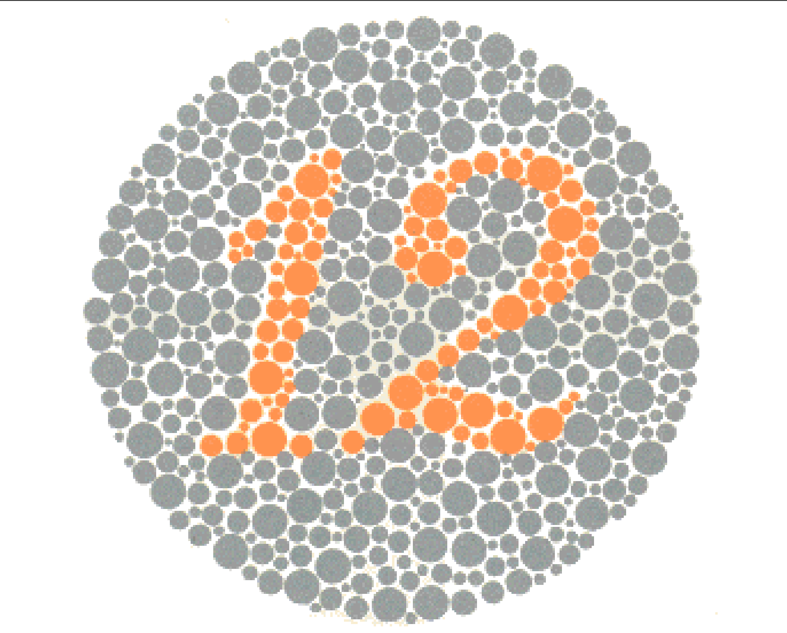

Tes Buta Warna
Home
Tes Color Blind
Tes Color Blind
Perhatikan gambar di bawah ini dan ketik angka yang Anda lihat.
Jika Anda tidak melihat angka apa pun, biarkan kosong atau isi dengan 0.
Gambar 1 dari 14

Kirim Jawaban